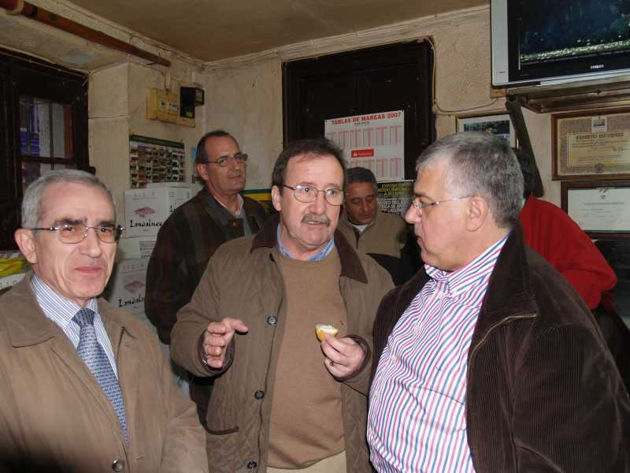

Encuentro en SantoñaVamos a ver, analicemos: el Sr. Merino se ríe porque él ya ha "degustado" lo suyo... el Sr. Lacaci mira en plan "meloso" porque lo he trincao y, disimuladamente se lo esconde en el bolsillo, como hacíamos con los cigarrillos para que no nos viera el celador de turno, más o menos... el Sr. Fiz, no para, él habla que habla pero las manos llenas.... el Sr. Escribano, más al fondo, le pide al Sr. Bitaube, que no se le ve, oculto tras el Sr. Peraita, que le esconda las cinco latas de anchoas y el 1/4 kg. de "Cabrales" para que no se note... y el Sr. Peraita, pero ¿cómo es posible....? No puede ser, eso no es un forúnculo ni un flemón.... el muy canalla racinguista se zampó el último pincho de anchoas.... ¡¡¡qué joío...!!! |
|
 |